遗传算法讲解（Matlab描述）
综述
遗传算法（Genetic Algorithm）是模拟达尔文生物进化论的自然选择和遗传学机理的生物进化过程的计算模型，是一种通过模拟自然进化过程搜索最优解的方法。遗传算法可以解决多种优化问题，如：TSP问题、生产调度问题、轨道优化问题等，在现代优化算法中占据了重要的地位，本文简要地介绍了遗传算法。
在此之前我们通过一个小故事来通俗地讲解遗传算法：
从前有一群快乐的袋鼠（初代），生活在某某不知名的山上，有的袋鼠喜欢生活在高处，有的袋鼠喜欢生活在山脚，如图：
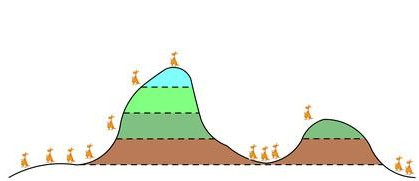
可是天有不测风云，袋鼠有祸兮旦福。随着全球气候变暖，生活在山脚的袋鼠被热死了（所以说保护环境、减少排放很重要）。但是，生活在山麓和山顶的袋鼠生存了下来，他（她）们互相啪啪啪，生下了下一代（第二代）。
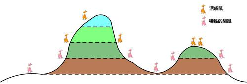
第二代袋鼠继承了父母的好奇心和勇气，有部分袋鼠继续向山顶跑，当然也有一小部分去探索山脚的世界去了。但是，可恶的人类不知道节制，温室效应继续增强，山麓的袋鼠也相继死去，当然，山脚的袋鼠也死了。
值得开心的是，接近山顶的袋鼠还活着诶！！！这群勇敢的袋鼠快乐地生活、繁衍、生活……繁衍，气候也不停地变热。就这样过了很久很久，终于有一只袋鼠跑到了山顶！！！到了山顶！！！到了山顶！！！（重要的事情说三遍）跑到山顶的他也得到了一块巧克力作为奖励，然后，故事快乐的结束了。
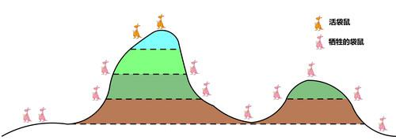
故事虽然结束了，但是，我们学习遗传算法的脚步不能停歇。回顾整个故事，每只袋鼠就是个体，最开始袋鼠是随机地分布在整座山上的。但随之气候变暖，有的袋鼠死去（选择）。同时，活下来的袋鼠繁衍，产生新的一代袋鼠，他们大部分生活在更高处，小部分去低处生活（交叉、变异）。同时，气候又变暖了，活在山麓的袋鼠也死了，只有生活在更高处的袋鼠活了下来。就这样周而复始地过了很久（迭代），终于有一只袋鼠到了山顶，吃到了巧克力，故事结束（跳出迭代）。
所以，遗传算法有几个部分：
例题：
寻找函数f(x)=x＊sin(3＊pi＊x)的最大值，搜索范围［－1，2］
初始化种群
随机产生一定数量的个体，组成一个种群。代码如下：
1 | function pop = IntPop(numPop) |
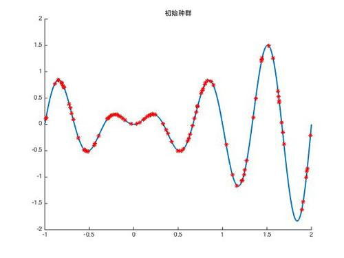
计算适应度
计算适应度需要个人找到合适的目标函数，适应度函数的优化目标是适应度越大越好。所以，如果你的目标是min，请使用它的倒数，即max＝1/min。本题中，在已知最大值的条件下，使用个体与目标的欧式距离的倒数作为适应度函数。当然，也可以将函数本身作为适应度函数。
1 | function fitness = Fitness(pop) |
选择
选择是为了将适应度小的个体淘汰的，模拟了自然环境中的优胜劣汰。选择的算法一般选择轮盘赌算法。轮盘赌算法是指，所有个体的适应度组成圆盘，适应度越大的扇形面积越大。
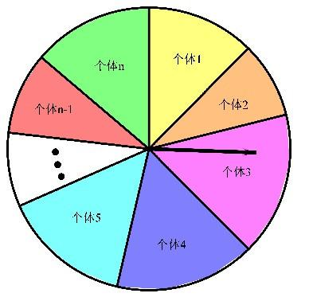
程序如下：1
2
3
4
5
6
7
8
9
10
11
12
13
14
15
16function parentsPop = Select(matrixFitness,pop,SELECTRATE)
sumFitness = sum(matrixFitness);%计算所有个体的适应度之和
accP = [];%积累概率
for n=1:size(pop,2)
accP(n) = sum(matrixFitness(1:n))./sumFitness;
%计算从1到n的积累概率
end
%轮盘赌选择法
for n=1:round(SELECTRATE*size(pop,2))
matrix = find(accP>rand);%找到比随机数小的积累概率位置
if isempty(matrix)
continue
end
parentsPop(:,n) = pop(:,matrix(1));
%将首个比随机数小的积累概率小的位置的个体遗传下去
end
编码
编码是为了产生一个2进制染色体，方便进行交叉和变异。当然，编码规则具体问题需要具体规定。
1 | function binPop = Codeing(pop) |
解码
有编码，当然也要解码。1
2
3
4
5
6
7
8
9
10
11function pop = Incodeing(binPop)
popNum = 1;%染色体包含的参数数量
for n = 1:size(binPop,2)
Matrix = binPop{1,n};
for num = 1:popNum
pop(num,n) = bin2dec(Matrix);
end
end
pop = pop./10^6-1;
交叉
交叉互换是生物遗传变异的主要形式，正是因为交叉互换，带给了我们一些和父母都不相同的生理特征。
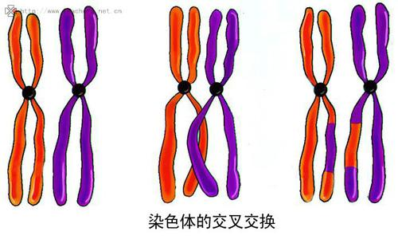
同样，交叉算子是遗传算法中非常重要的一部分。机器从种群中随机选择一对“父母亲”，随机产生交叉位置，交换染色体的剩下部分。如图
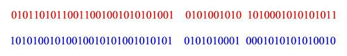
发生交叉之后的染色体：
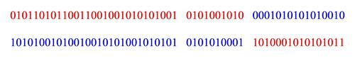
可以看到，一次交叉就可以产生两个新个体。当时，考虑种群的多样性，我们可以只取一条个体。
程序如下：1
2
3
4
5
6
7
8
9
10
11
12
13
14
15function kidsPop = Crossover(parentsPop,NUMPOP,CROSSOVERRATE)
kidsPop = {[]};n = 1;
while size(kidsPop,2)<NUMPOP-size(parentsPop,2)
%选择出交叉的父代和母代
father = parentsPop{1,ceil((size(parentsPop,2)-1) * rand) + 1};
mother = parentsPop{1,ceil((size(parentsPop,2)-1) * rand) + 1};
%随机产生交叉位置
crossLocation = ceil((length(father)-1) * rand) + 1;
%如果随即数比交叉率低，就杂交
if rand<CROSSOVERRATE
father(1,crossLocation:end) = mother(1,crossLocation:end);
kidsPop{n} = father;
n = n + 1;
end
end
变异
在遗传变异过程中，另一个重要的过程就是变异。
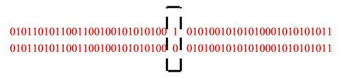
我们通过随机某位取反，完成变异操作。
程序如下：1
2
3
4
5
6
7
8
9
10function kidsPop = Variation(kidsPop,VARIATIONRATE)
for n = 1:size(kidsPop,2)
if rand<VARIATIONRATE
temp = kidsPop{n};
%找到变异位置
location = ceil(length(temp) * rand);
temp = [temp(1:location-1) num2str(~temp(location)) temp(location+1:end)];
kidsPop{n} = temp;
end
end
最后的优化结果：
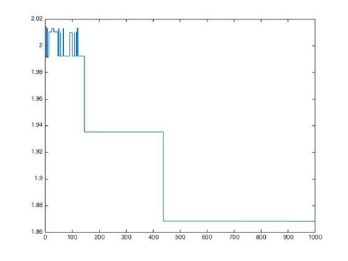
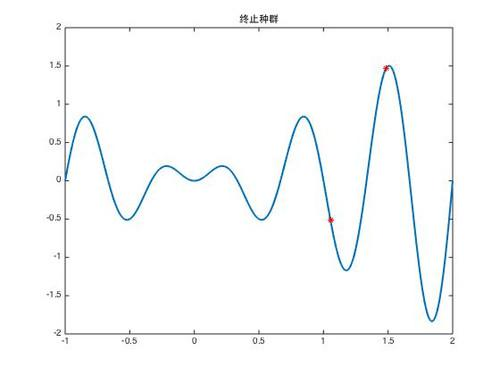
下载完整程序：遗传算法源码